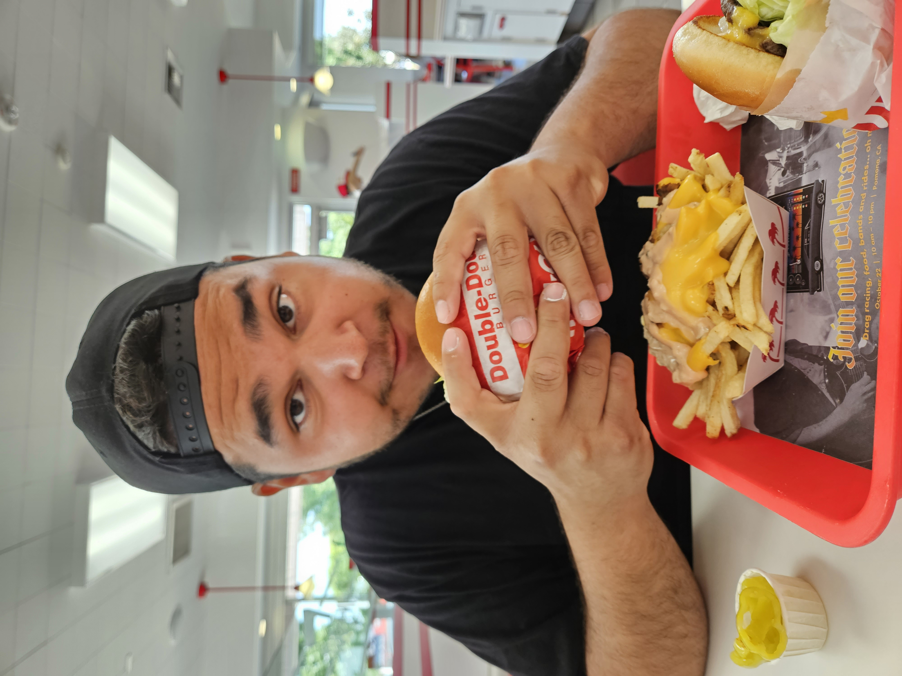
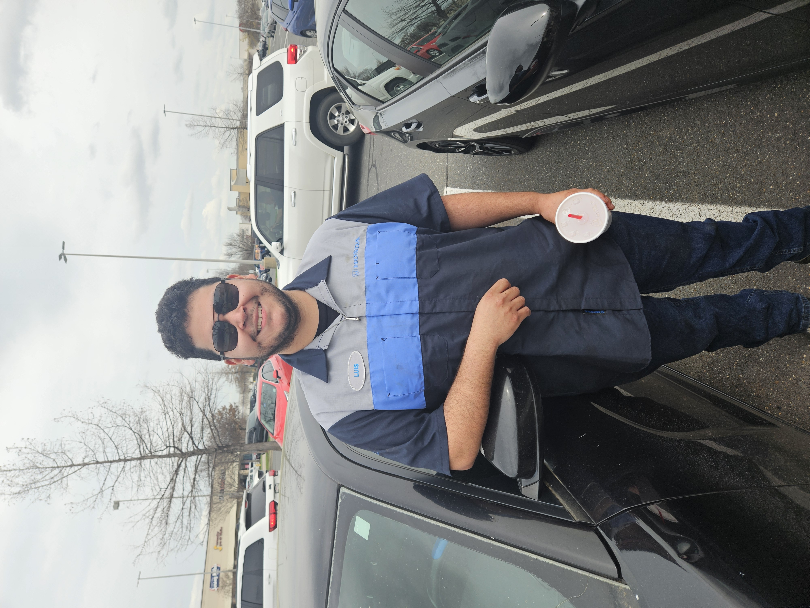

Hello! My name is Luis Rosas, and I am excited to share my accomplishments with you.
There are many things that I have accomplished in my life,
and I am proud of each and every one of them. From graduating
high school to continuing my education at a technical college to become an automotive mechanic,
I have worked hard to achieve my goals. During the process, my childhood best friend
had passed away, this taught me the value of cherishing every moment and the people around me.
We wanted to become mechanics together, and I set out on that mission to achieve that goal.
During technical college I made some friends along the way, and after graduating, I was able to
secure a job at a Honda dealership; first starting as a lube technician. After a years hard work and dedication,
I was promoted to a full-time technician. I want to continue to grow and learn in my career, eventually
becoming a master technician. I believe that with determination and perseverance, anything is possible.
While all of this has happened, I have also had the opportunity to travel and see different parts of
the United States. My wife and I have gotten to experience the following states:
- Alabama
- Arkansas
- Arizona
- California
- Colorado
- Florida
- Idaho
- Mississippi
- Montana
- New Mexico
- Texas
- Washington
- Wyoming
And we want to continue to travel! The next state we want to visit is New York or Alaska. We want to see the beauty
of the concrete jungle, but also the beauty of the Northern Lights.

